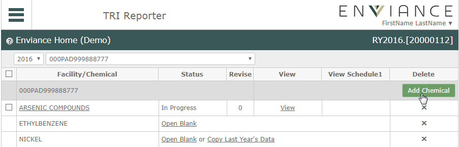
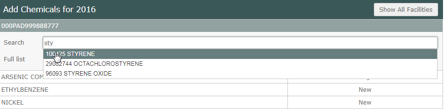
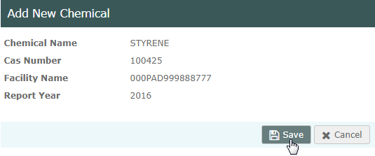
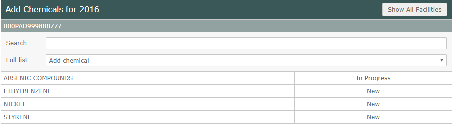
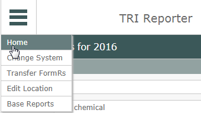
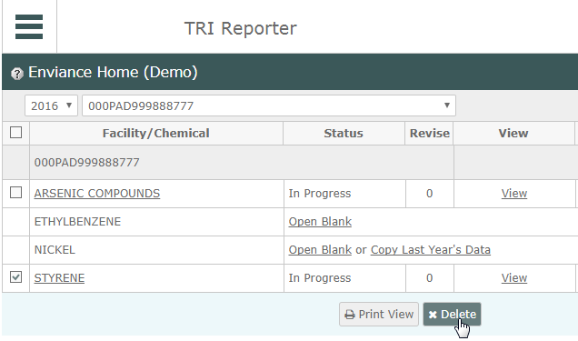

Select Copy Last Year's Data to transfer data from the previous year. The FormR will open for editing with the facility information and the transferred data from last year.

You can add new chemicals to report on for the year or delete existing chemicals you no longer need to report on.
To add a chemical to report on:
Select the Add Chemical button to the right of the facility name in the grid.

Choose a chemical from the full list drop-down. Or enter a search string in the Search box and choose the chemical from the filtered list.

After selecting the chemical, the chemical summary is displayed.

Click Save.
The current list of chemicals for the facility is displayed. You can search and add more chemicals if desired.

When you are finished adding chemicals, select Home from the main menu button.

If a FormR exists for a chemical for the previous year, an option to Copy Last Year's Data will be shown. You can choose whether to open a blank FormR or to transfer last year's data and edit it.
To create and start a FormR for a listed chemical:
Do one of the following:
Select Copy Last Year's Data to transfer data from the previous year. The FormR will open for editing with the facility information and the transferred data from last year.
To remove a chemical FormR:
On the Home page, select the checkbox for the chemical, then select Delete.
